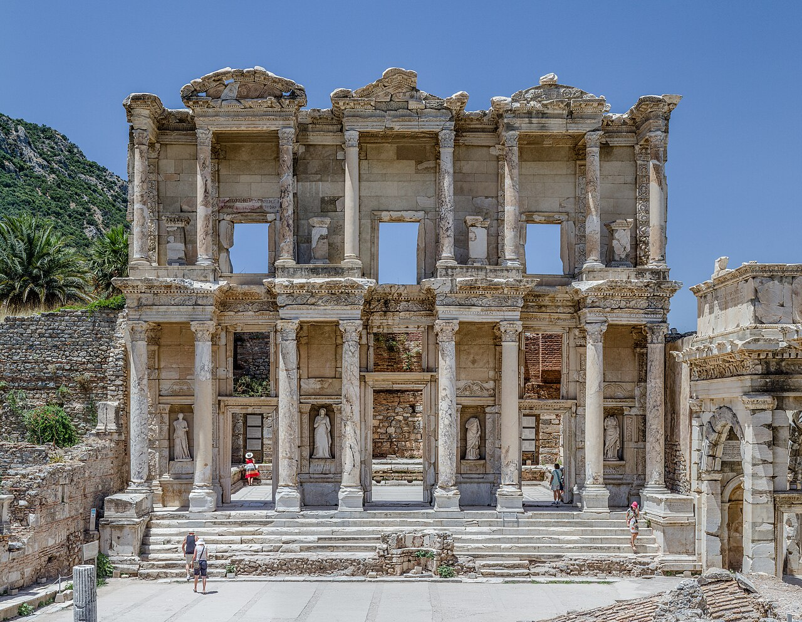
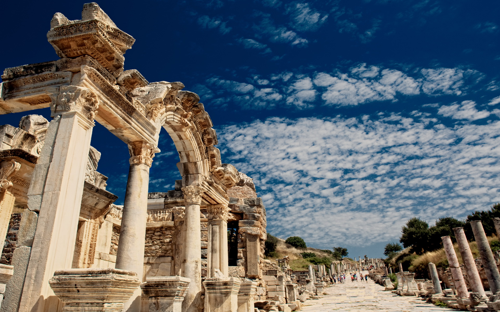

1994'te geçici listeye girmişti. 2001'deki başvurusu ertelenmişti. Dört ögesi vardır: 1) Çukuriçi Höyüğü, 2) Efes Antik Kenti, 3) Ayasuluk Tepesi, Artemis Tapınağı ve Orta Çağ Yerleşimi, 4) Meryem Ana Evi
Anadolu'nun batı kıyısında, bugünkü İzmir ilinin Selçuk ilçesinin üç kilometre güneybatısında yer alan antik bir Luvi şehriydi. Şehir Anadolu'da Yunan sömürgeciliğinin başlamasıyla birlikte İyonya ve daha sonra Roma dönemlerinde de önemini korumuştur
 